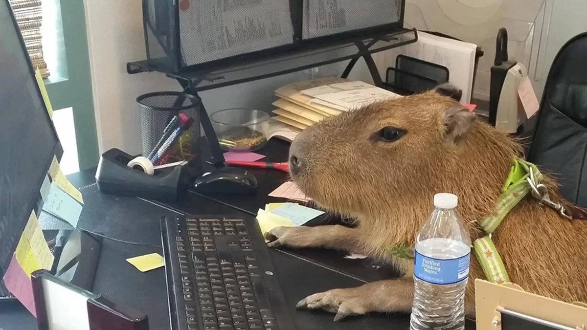

<link href="https://cdn.jsdelivr.net/npm/bootstrap@5.3.0/dist/css/bootstrap.min.css" rel="stylesheet" integrity="sha384-9ndCyUaIbzAi2FUVXJi0CjmCapSmO7SnpJef0486qhLnuZ2cdeRhO02iuK6FUUVM" crossorigin="anonymous">
<link rel="stylesheet" href="https://cdn.jsdelivr.net/npm/bootstrap-icons@1.10.5/font/bootstrap-icons.css">
<link href="../../static/css/style.css" rel="stylesheet">
 
<article class="container mt-5 mb-5">
	<a href="nomepost.html" target="_blank" rel="noopener noreferrer">
		<figure class="card mb-3">
				
				<figcaption class="card-body">
						<h5 class="cardtitle">Capivara Cybernetica</h5>
						<p class="card-text">
							As capivaras cibernéticas representam uma fusão inovadora entre seres vivos e tecnologia avançada. 
                            Essas criaturas combinam a natureza dócil das capivaras com elementos cibernéticos, resultando em uma coexistência harmoniosa entre o mundo natural e o digital. 
                            Equipadas com nanosensores, as capivaras cibernéticas monitoram ambientes aquáticos, contribuindo para a preservação dos ecossistemas. 
                            Além disso, atuam como embaixadoras da conscientização ambiental, educando as pessoas sobre a importância da sustentabilidade. 
                            No entanto, questões éticas e preocupações surgem em relação à interferência tecnológica na natureza. 
                            A união entre conhecimento humano e criatividade para resolver desafios ambientais é central nessa abordagem,reafirmando o compromisso com a harmonia entre inovação, vida selvagem e tecnologia.
						</p>
						<p class="card-text"><small class="text-muted">23 de Julho de 2023</small></p>

						<div class="card py-2 px-4 m-3  identific">
							<div class="row g-0 aling-items-center">
								<div class="col-md-2">
									
								</div>
								<div class="col-md-10"><div class="card-body"><p class="card-text "><strong>Felipe Guiço</strong></p></div></div>
							</div>
						</div>
				</figcaption>
		</figure>
	</a>
</article>